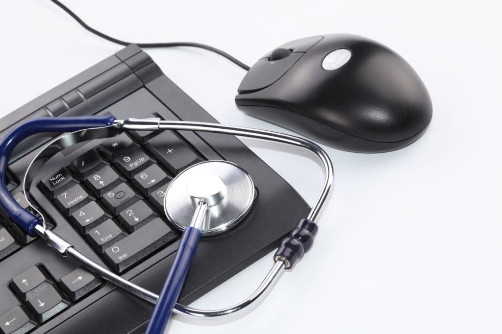

За останні 20 років рівень застосування комп'ютерів в медицині надзвичайно підвищився. Практична медицина стає все більш і більш автоматизованої. Існує безліч програм для комп'ютерів.
Виділяють два види комп'ютерного забезпечення: програмне та апаратне. Програмне забезпечення включає в себе системне і прикладне.
Системне програмне забезпечення призначено для функціонування самого комп'ютера як єдиного цілого. Це, в першу чергу, операційна система, а також сервісні програми різного призначення - драйвери, утиліти і т. п. У системне програмне забезпечення входить мережевий інтерфейс, який забезпечує доступ до даних на сервері. Дані, введені в комп'ютер, організовані, як правило, в базу даних, яка, в свою чергу, управляється прикладною програмою управління базою даних (СКБД) і може містити, зокрема, історії хвороби, рентгенівські знімки в оцифрованому вигляді, статистичну звітність по стаціонару , бухгалтерський облік.
Прикладне забезпечення є програми, для яких, власне, і призначений комп'ютер. Це - обчислення, обробка результатів досліджень, різного роду розрахунки, обмін інформацією між комп'ютерами і т. д.
Складні сучасні дослідження в медицині немислимі без застосування обчислювальної техніки. До таких досліджень можна віднести комп'ютерну томографію, томографію з використанням явища ядерно-магнітного резонансу, ультрасонографію, дослідження із застосуванням ізотопів. Кількість інформації, яка виходить за таких дослідження так величезна, що без комп'ютера чоловік був би нездатний її сприйняти і обробити.
Дуже важливим останнім часом стає використання комп'ютерів, об'єднаних в комп'ютерні мережі за допомогою спеціальних кабелів або телефонних каналів. Такі комп'ютерні мережі дозволяють дуже ефективно проводити обмін даними між віддаленими один від одного комп'ютерами. У рамках Російського Міністерства Охорони здоров'я та медичної промисловості функціонує комп'ютерна мережа MEDNET, яка дозволяє спростити збір статистичних медичних даних по регіонах, робити відповідну обробку, агрегування даних та складання звітності. Крім того, ця мережа дозволяє передавати будь-які дані між медичними установами, що мають комп'ютери. Останнім часом також набули поширення комп'ютерні гіпертекстові системи, які дозволяють таким чином організувати інформацію, що вона стає легко доступною для людей, які не є фахівцями в комп'ютерному справі. Такі гіпертекстові системи можуть включати в себе як текстову інформацію, так і звукову та графічну, в тому числі, рухомі відеозображення. Це дозволяє створювати інформаційні системи, що здійснюють інформаційну підтримку медиків у тих випадках, коли їх кваліфікації або досвіду недостатньо для прийняття рішень про комплекс лікувальних заходів, наприклад, на догоспітальному етапі. Ці ж системи, оснащені підсистемою питань і оцінки відповідей, можуть використовуватися для цілей навчання.
